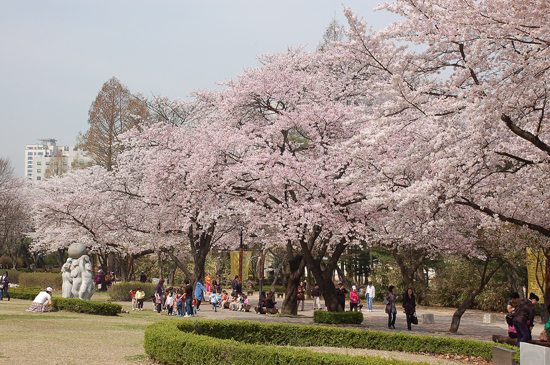

← 목록으로
어린이대공원

기간
일반적으로 4월 전후가 벚꽃 보기 좋은 시기입니다. 정확한 개화는 매년 확인이 필요합니다.
장소
서울 어린이대공원 호수·잔디광장·산책로 일대
주요 행사
공원 내 봄 나들이, 동물원·식물원·어린이체험 시설과 함께 즐기는 가족 단위 방문이 많습니다.
벚꽃 특징
넓은 잔디와 호수를 둘러싼 산책로에 벚꽃이 이어져 여유로운 피크닉 분위기를 내기 좋습니다.
팁
유모차·어린이 동반이 많습니다. 간단한 돗자리·간식 챙기면 호수 주변에서 쉬기 좋습니다.